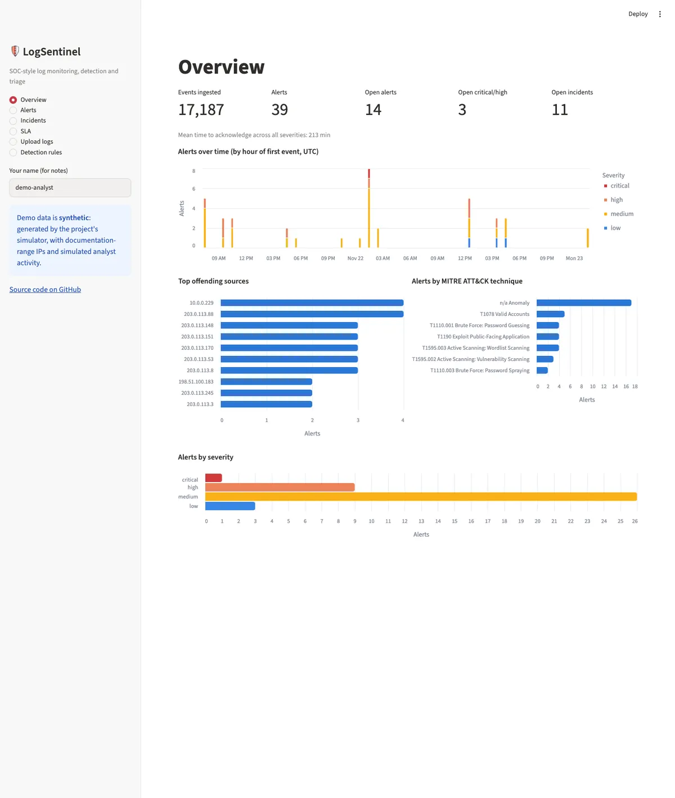

Security monitoring · ServiceNow integration
LogSentinel
A small Security Operations Centre tool. It reads SSH and web server logs, detects attacks, helps an analyst triage them, and opens and tracks the incidents in ServiceNow.
- 9 YAML detection rules mapped to MITRE ATT&CK, plus an Isolation Forest anomaly model.
- On labelled test traffic the rules reach 82% precision and catch 12 of 13 attacks (92% recall). The evaluation also says what they miss.
- High and critical incidents open a ServiceNow ticket through the REST API. Correlation IDs prevent duplicates, new alerts become work notes, and resolving the ticket closes the alerts. Verified on a real instance.
- Triage with SLA tracking, one-click PDF incident reports and a runbook for every detection.